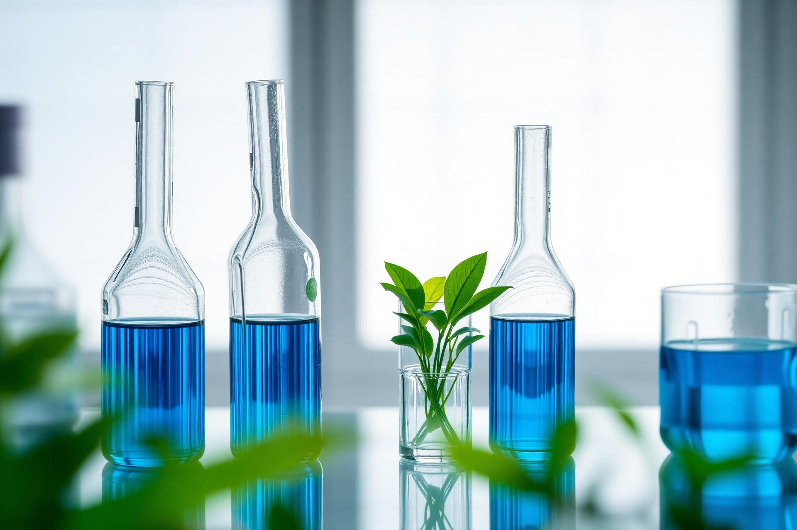

An environmental testing and research laboratory delivering precise, reliable analysis for industrial partners and academic researchers — grounded in scientific rigor and modern instrumentation.

Minds Experimental Studies operates under Greenplus Pvt Ltd as a dedicated environmental laboratory. We support industry, government and academic clients with accurate analytical services, research collaboration, and consultation across water, soil, and plastic studies.
Comprehensive physical, chemical and biological water testing.
Detection and quantification of microplastic contamination.
Soil composition, nutrient and contamination profiling.
Expert guidance on environmental compliance and impact.
Field-level plastic pollution and waste characterization.
Designed and conducted research surveys with analysis.